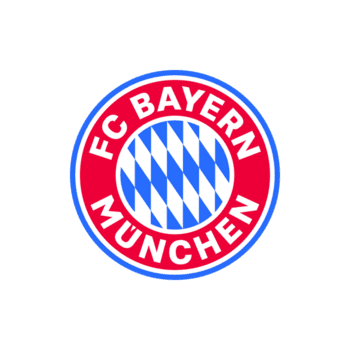

O Bayern Munich é um dos clubes mais vitoriosos do futebol mundial. Fundado em 1900, na cidade de Munique, Alemanha, tornou-se referência em excelência esportiva, formação de atletas e conquistas nacionais e internacionais.
O clube possui diversos títulos da Bundesliga, Copas da Alemanha e conquistas da Liga dos Campeões da UEFA, sendo reconhecido por sua tradição, organização e torcida apaixonada.